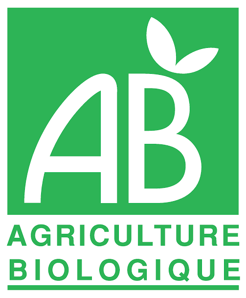
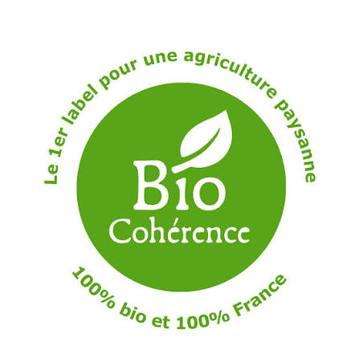
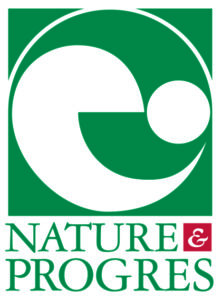
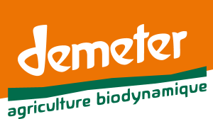
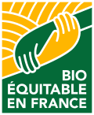
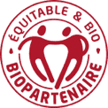

Les magasins bio près de chez vous
C’est quoi, le bio ?
Biocoop, Naturalia, Bio c’ Bon, La Vie Claire, Satoriz… Retrouvez les magasins bio autour de vous, leurs horaires d’ouverture et l’itinéraire pour y aller.
Un fruit ou un légume bio a poussé sans pesticides chimiques ni engrais de synthèse. Tu le reconnais grâce au logo vert AB ou à la petite feuille étoilée européenne. Pour trouver un magasin bio près de chez toi, passe en mode parent avec tes parents !
Indiquez votre position ou un code postal pour voir les magasins bio.
Données OpenStreetMap, complétées par des bénévoles : les horaires peuvent être incomplets, vérifiez auprès de la mairie. Un magasin bio manque ? Signalez-le sur OpenStreetMap. Votre position n’est ni enregistrée ni transmise à Sainos.
Les certifications bio
En magasin, plusieurs logos cohabitent. Tous garantissent une agriculture sans pesticides ni engrais chimiques de synthèse, mais certains vont plus loin sur l’origine, l’équité ou les pratiques agricoles.
-

AB — Agriculture Biologique Logo français Le label bio le plus connu en France. Il garantit au moins 95 % d’ingrédients bio, sans pesticides chimiques de synthèse ni OGM. Il suit les mêmes règles que le logo européen. - Eurofeuille Logo bio européen Obligatoire sur tous les produits bio emballés vendus dans l’Union européenne. Il porte le code de l’organisme certificateur et l’origine des matières premières (UE, non-UE).
-

Bio Cohérence Label associatif français Va plus loin que le règlement européen : 100 % d’ingrédients bio, fermes entièrement en bio, origine France privilégiée et exigences sociales. -

Nature & Progrès Mention associative Créée en 1964, pionnière du bio. Cahier des charges plus strict que l’AB, contrôlé par les producteurs et les consommateurs eux-mêmes (système participatif). -

Demeter Label de biodynamie Agriculture biodynamique : ferme pensée comme un organisme vivant, préparations naturelles, respect des rythmes lunaires. Exige d’abord la certification bio. -

Bio Équitable en France Label bio et équitable Filières bio françaises avec un prix juste garanti aux producteurs, des contrats sur plusieurs années et une gouvernance partagée. -

Biopartenaire Label bio et équitable Associe bio et commerce équitable, en France comme à l’international : juste rémunération des producteurs et relations commerciales durables.